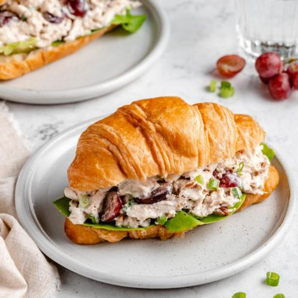

Chicken Salad Sandwiches

Description
This chicken salad sandwich is the perfect addition to any picnic. It has a great combination of sweet and salty flavors and is easy to make, requiring very few ingredients.
I learned this recipe from one of my first ever roommates after graduating high school - Martha Sue Dilbeck. She was a terrible roommate and went on to steal quite a lot of money from me, but to this day I sure do love her chicken salad.
Ingredients
- 1 can of chunked chicken in water
- a big dollop of mayonaise (Miracle whip works too, if you're a monster.)
- 1 packet of powdered ranch dressing mix
- green grapes cut in half, as many as you want
- note: Sometimes I like to add some chopped pecans, too.
- bread - Croissants work nicely, but most any bread will do.
Steps
- Mix all your ingredients, except the bread, because that's not how sandwiches work.
- Put the chicken salad between two slices of bread.
- Shout, "F*** you, Martha Sue!"
- Eat and enjoy.